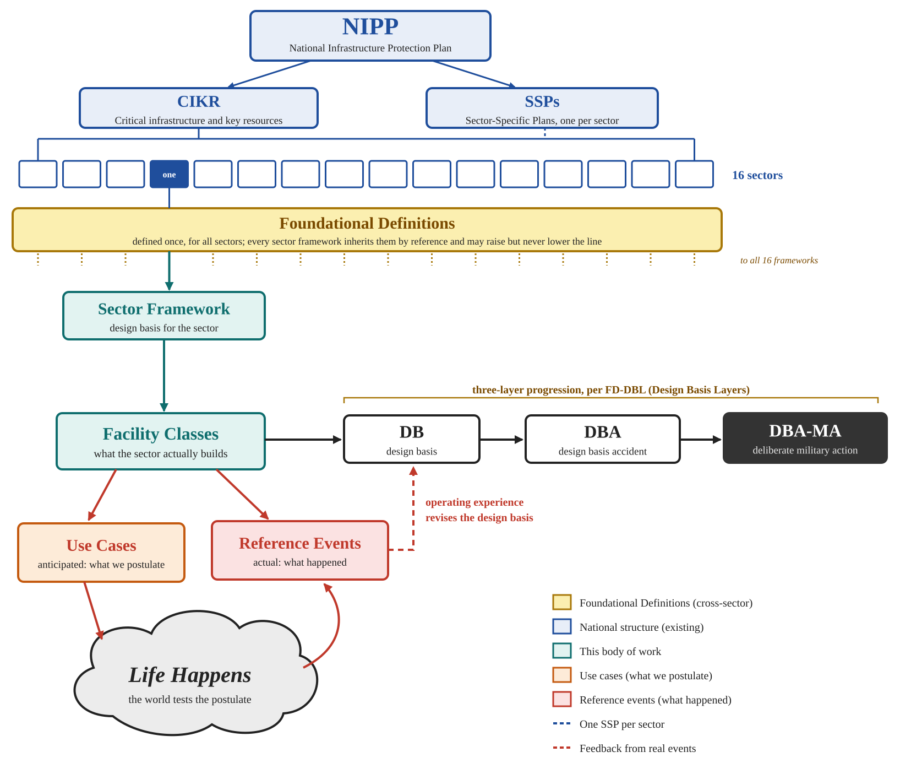

One worked example for each critical infrastructure sector
What we design against, and why it matters to you
For sixty years the systems we depend on, the water plant, the power grid, the 911 center, the hospital down the road, have been engineered against accidents: storms, floods, a pump that fails, an operator who makes a mistake. They are engineered well. But the whole discipline rests on an assumption nobody ever had to write down, that whatever comes at you is indifferent to your defenses. A flood does not wait for the night shift. A storm does not come back for the repair crew.
A deliberate adversary does. It chooses its moment, it keeps coming, it aims at the one point that matters, and it blocks the repair. Those four things, intentionality, persistence, precision and denial, are what this work adds to the design basis. And because these systems lean on one another, losing one is rarely the end of it: the hospital needs the water, the water needs the power, and the power needs the phones. Every real event on this site is a case where that happened, most of them without any adversary at all.
The point is not alarm. It is that what we can describe, we can design for. A design basis is a written promise of exactly what a facility must withstand, made in advance and on the record, so that anyone can check it and everyone knows when it has been exceeded. This site shows one example of that promise for each sector: what we postulate, what actually happened, and where the design holds and where it hands off to someone else.

The sectors
Choose a sector. Each page gives a one-line answer to “so what?”, the sectors it leans on and those that lean on it, and four cards: the sector framework, one facility class, one real event (observed) and one use case (postulated).
Four ways in
- For the public — what happens to a household when these systems fail, and why one failure spreads
- For regulators — the range of events to design against, and where the operator's responsibility ends
- For defenders — your assets as an adversary would see them, and what you must hold on your own
- For supply chain — trusted products, assets that cannot be replaced quickly, and single sources
New to the idea? Start with What is a design basis?
Citing this site
Cite the edition: T. Roxey, CIKR Design Basis Examples, Edition 1 (November 2026), Eclectic Technologies, November 2026, https://doi.org/10.5281/zenodo.23863986. To cite the example set as it currently stands, across editions, use https://doi.org/10.5281/zenodo.23863985.